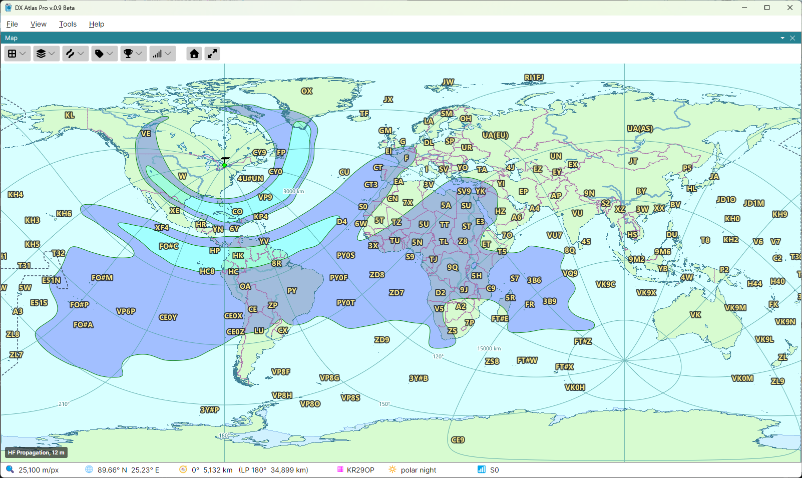

Propagation Prediction

The propagation map shows how strong your signal would be at every point of the globe on one band, at the time the Clock panel shows. It is computed by the program with the DVOACAP engine based on the VOACAP algorithms, from your home location, the band, and your station as set in the Propagation section of the Settings Dialog.
Showing the Map
Open the Ionosphere button on the map toolbar:
- tick HF Propagation to show the map in place of an ionospheric map;
- pick the band in the Band submenu: 80, 60, 40, 30, 20, 17, 15, 12 or 10 m;
- tick Long Path to compute the signal along the long path, the longer arc of the great circle around the Earth, instead of the short path.
The band and Long Path are the same for both maps; HF Propagation is ticked for each map separately.
Reading the Map
The map is drawn in bands of S-meter readings, from S1 up to S9+12 dB, with a green line at each
band edge; below S1 it is left clear. The legend in the lower left corner names the band, with
LP after it on the long path. The status bar's 📶 cell shows the reading at the point under the
mouse: S7, or S9 + 10 dB.
How to read the map, and how many S units to add or subtract when your station differs from the settings, is explained in HF Propagation on the Reading the Maps for DX'ing page.
Live Updates
The map is computed for a quarter hour of UTC, and changes when the clock enters the next one. With the clock live, the program computes the maps of the next 3 hours in the background, so they are ready when they are needed. With Use STORM Model ticked in the Ionospheric Parameters dialog, the map follows geomagnetic disturbances as the Ap index is downloaded; see Ionospheric Maps.
A change of the band, the path, the home location or a setting starts the map again at once; while
it is computed, the status bar shows …. The maps already computed are kept on disk, so a return
to earlier settings, or a restart, needs no new computation.
The Propagation Settings
The Propagation section of the Settings dialog sets what the map is computed for:
- Transmitter Power, W - your transmitter's power, 100 W by default;
- Transmit Antenna Gain, dBi - the gain of your antenna over an isotropic one, the same in every direction;
- Receive Antenna Gain, dBi - the gain of the antennas at the receiving end;
- Minimum Takeoff Angle, ° - the lowest elevation angle the antennas radiate at, 3° by default;
- Man-made Noise - the noise at the receiving end: Industrial, Residential, Rural or Remote;
- Grid Resolution - the spacing of the points the map is computed at, 3° or 1.5°. The finer grid takes four times as long;
- Threads - the number of processor threads that compute the map, 0 for one per processor.
To compute the maps of a whole day in advance, see Pre-computing Propagation.